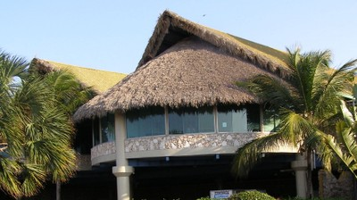

Vegetal [RMT8]
Todos los tipos de cubierta del techo que estén hechos de materiales vegetales livanos. Incluye techo de corteza de abedul, bambú, paja. No incluye "techos verdes" plantados con suelo o plantas vivas.

Cubierta de techo en paja, India (People in Centre)

Cubierta de techo en paja, Cuba (S. Brzev)

Cubierta del techo en paja, edificio del aeropuerto, República Dominicana (S. Brzev)